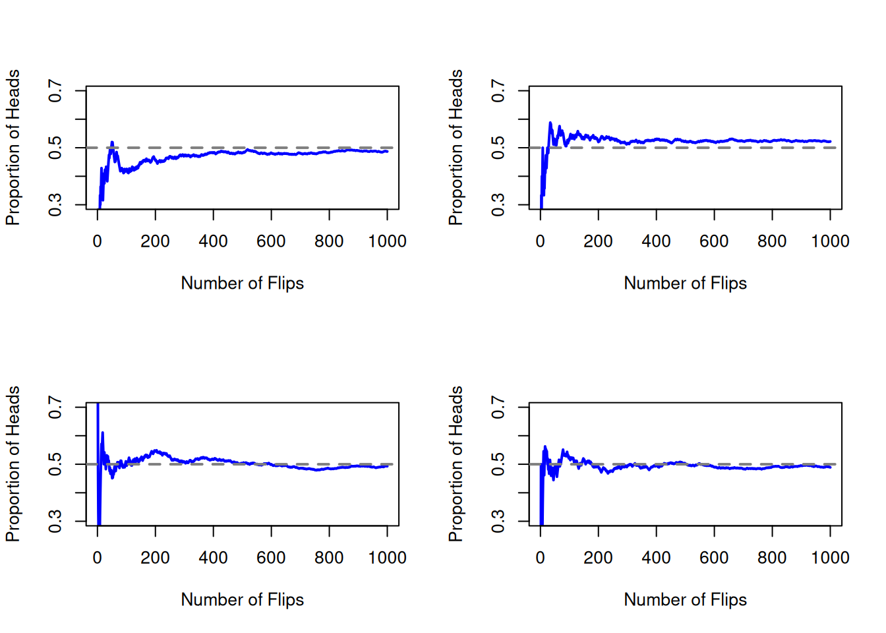
9 Introduction to probability
[God] has afforded us only the twilight … of Probability.
— John Locke
Up to this point in the book, we’ve discussed some of the key ideas in experimental design, and we’ve talked a little about how you can summarise a data set. To a lot of people, this is all there is to statistics: it’s about calculating averages, collecting all the numbers, drawing pictures, and putting them all in a report somewhere. Kind of like stamp collecting, but with numbers. However, statistics covers much more than that. In fact, descriptive statistics is one of the smallest parts of statistics, and one of the least powerful. The bigger and more useful part of statistics is that it provides tools that let you make inferences about data.
Once you start thinking about statistics in these terms – that statistics is there to help us draw inferences from data – you start seeing examples of it everywhere. For instance, here’s a tiny extract from a newspaper article in the Sydney Morning Herald (30 Oct 2010):
“I have a tough job,” the Premier said in response to a poll which found her government is now the most unpopular Labor administration in polling history, with a primary vote of just 23 per cent.
This kind of remark is entirely unremarkable in the papers or in everyday life, but let’s have a think about what it entails. A polling company has conducted a survey, usually a pretty big one because they can afford it. I’m too lazy to track down the original survey, so let’s just imagine that they called 1000 NSW voters at random, and 230 (23%) of those claimed that they intended to vote for the ALP. For the 2010 Federal election, the Australian Electoral Commission reported 4,610,795 enrolled voters in NSW; so the opinions of the remaining 4,609,795 voters (about 99.98% of voters) remain unknown to us. Even assuming that no-one lied to the polling company the only thing we can say with 100% confidence is that the true ALP primary vote is somewhere between 230/4610795 (about 0.005%) and 4610025/4610795 (about 99.83%). So, on what basis is it legitimate for the polling company, the newspaper, and the readership to conclude that the ALP primary vote is only about 23%?
The answer to the question is pretty obvious: if I call 1000 people at random, and 230 of them say they intend to vote for the ALP, then it seems very unlikely that these are the only 230 people out of the entire voting public who actually intend to do so. In other words, we assume that the data collected by the polling company is pretty representative of the population at large. But how representative? Would we be surprised to discover that the true ALP primary vote is actually 24%? 29%? 37%? At this point everyday intuition starts to break down a bit. No-one would be surprised by 24%, and everybody would be surprised by 37%, but it’s a bit hard to say whether 29% is plausible. We need some more powerful tools than just looking at the numbers and guessing.
Inferential statistics provides the tools that we need to answer these sorts of questions, and since these kinds of questions lie at the heart of the scientific enterprise, they take up the lion’s share of every introductory course on statistics and research methods. However, the theory of statistical inference is built on top of probability theory. And it is to probability theory that we must now turn. This discussion of probability theory is basically background: there’s not a lot of statistics per se in this chapter, and you don’t need to understand this material in as much depth as the other chapters in this part of the book. Nevertheless, because probability theory does underpin so much of statistics, it’s worth covering some of the basics.
9.1 How are probability and statistics different?
Before we start talking about probability theory, it’s helpful to spend a moment thinking about the relationship between probability and statistics. The two disciplines are closely related but they’re not identical. Probability theory is “the doctrine of chances”. It’s a branch of mathematics that tells you how often different kinds of events will happen. For example, all of these questions are things you can answer using probability theory:
- What are the chances of a fair coin coming up heads 10 times in a row?
- If I roll two six sided dice, how likely is it that I’ll roll two sixes?
- How likely is it that five cards drawn from a perfectly shuffled deck will all be hearts?
- What are the chances that I’ll win the lottery?
Notice that all of these questions have something in common. In each case the “truth of the world” is known, and my question relates to the “what kind of events” will happen. In the first question I know that the coin is fair, so there’s a 50% chance that any individual coin flip will come up heads. In the second question, I know that the chance of rolling a 6 on a single die is 1 in 6. In the third question I know that the deck is shuffled properly. And in the fourth question, I know that the lottery follows specific rules. You get the idea. The critical point is that probabilistic questions start with a known model of the world, and we use that model to do some calculations. The underlying model can be quite simple. For instance, in the coin flipping example, we can write down the model like this: \[ P(\text{heads}) = 0.5 \] which you can read as “the probability of heads is 0.5”. As we’ll see later, in the same way that percentages are numbers that range from 0% to 100%, probabilities are just numbers that range from 0 to 1. When using this probability model to answer the first question, I don’t actually know exactly what’s going to happen. Maybe I’ll get 10 heads, like the question says. But maybe I’ll get three heads. That’s the key thing: in probability theory, the model is known, but the data are not.
So that’s probability. What about statistics? Statistical questions work the other way around. In statistics, we do not know the truth about the world. All we have is the data, and it is from the data that we want to learn the truth about the world. Statistical questions tend to look more like these:
- If my friend flips a coin 10 times and gets 10 heads, are they playing a trick on me?
- If five cards off the top of the deck are all hearts, how likely is it that the deck was shuffled?
- If the lottery commissioner’s spouse wins the lottery, how likely is it that the lottery was rigged?
This time around, the only thing we have are data. What I know is that I saw my friend flip the coin 10 times and it came up heads every time. And what I want to infer is whether or not I should conclude that what I just saw was actually a fair coin being flipped 10 times in a row, or whether I should suspect that my friend is playing a trick on me. The data I have look like this:
H H H H H H H H H H Hand what I’m trying to do is work out which “model of the world” I should put my trust in. If the coin is fair, then the model I should adopt is one that says that the probability of heads is 0.5; that is, \(P(\text{heads}) = 0.5\). If the coin is not fair, then I should conclude that the probability of heads is not 0.5, which we would write as \(P(\text{heads}) \neq 0.5\). In other words, the statistical inference problem is to figure out which of these probability models is right. Clearly, the statistical question isn’t the same as the probability question, but they’re deeply connected to one another. Because of this, a good introduction to statistical theory will start with a discussion of what probability is and how it works.
9.2 What does probability mean?
Let’s start with the first of these questions. What is “probability”? It might seem surprising to you, but while statisticians and mathematicians (mostly) agree on what the rules of probability are, there’s much less of a consensus on what the word really means. It seems weird because we’re all very comfortable using words like “chance”, “likely”, “possible” and “probable”, and it doesn’t seem like it should be a very difficult question to answer. If you had to explain “probability” to a five year old, you could do a pretty good job. But if you’ve ever had that experience in real life, you might walk away from the conversation feeling like you didn’t quite get it right, and that (like many everyday concepts) it turns out that you don’t really know what it’s all about.
So I’ll have a go at it. Let’s suppose I want to bet on a soccer game between two teams of robots, Arduino Arsenal and C Milan. After thinking about it, I decide that there is an 80% probability that Arduino Arsenal winning. What do I mean by that? Here are three possibilities…
- They’re robot teams, so I can make them play over and over again, and if I did that, Arduino Arsenal would win 8 out of every 10 games on average.
- For any given game, I would only agree that betting on this game is only “fair” if a $1 bet on C Milan gives a $5 payoff (i.e. I get my $1 back plus a $4 reward for being correct), as would a $4 bet on Arduino Arsenal (i.e., my $4 bet plus a $1 reward).
- My subjective “belief” or “confidence” in an Arduino Arsenal victory is four times as strong as my belief in a C Milan victory.
Each of these seems sensible. However they’re not identical, and not every statistician would endorse all of them. The reason is that there are different statistical ideologies (yes, really!) and depending on which one you subscribe to, you might say that some of those statements are meaningless or irrelevant. In this section, I give a brief introduction to the two main approaches that exist in the literature. These are by no means the only approaches, but they’re the two big ones.
9.2.1 The frequentist view
The first of the two major approaches to probability, and the more dominant one in statistics, is referred to as the frequentist view, and it defines probability as a long-run frequency. Suppose we were to try flipping a fair coin, over and over again. By definition, this is a coin that has \(P(H) = 0.5\). What might we observe? One possibility is that the first 20 flips might look like this:
T,H,H,H,H,T,T,H,H,H,H,T,H,H,T,T,T,T,T,HIn this case 11 of these 20 coin flips (55%) came up heads. Now suppose that I’d been keeping a running tally of the number of heads (which I’ll call \(N_H\)) that I’ve seen, across the first \(N\) flips, and calculate the proportion of heads \(N_H / N\) every time. Here’s what I’d get (I did literally flip coins to produce this!):
| number of flips | 1 | 2 | 3 | 4 | 5 | 6 | 7 | 8 | 9 | 10 |
|---|---|---|---|---|---|---|---|---|---|---|
| number of heads | 0 | 1 | 2 | 3 | 4 | 4 | 4 | 5 | 6 | 7 |
| proportion | .00 | .50 | .67 | .75 | .80 | .67 | .57 | .63 | .67 | .70 |
| number of flips | 11 | 12 | 13 | 14 | 15 | 16 | 17 | 18 | 19 | 20 |
|---|---|---|---|---|---|---|---|---|---|---|
| number of heads | 8 | 8 | 9 | 10 | 10 | 10 | 10 | 10 | 10 | 11 |
| proportion | .73 | .67 | .69 | .71 | .67 | .63 | .59 | .56 | .53 | .55 |
Notice that at the start of the sequence, the proportion of heads fluctuates wildly, starting at .00 and rising as high as .80. Later on, one gets the impression that it dampens out a bit, with more and more of the values actually being pretty close to the “right” answer of .50. This is the frequentist definition of probability in a nutshell: flip a fair coin over and over again, and as \(N\) grows large (approaches infinity, denoted \(N\rightarrow \infty\)), the proportion of heads will converge to 50%. There are some subtle technicalities that the mathematicians care about, but qualitatively speaking, that’s how the frequentists define probability. Unfortunately, I don’t have an infinite number of coins, or the infinite patience required to flip a coin an infinite number of times. However, I do have a computer, and computers excel at mindless repetitive tasks. So I asked my computer to simulate flipping a coin 1000 times, and then drew a picture of what happens to the proportion \(N_H / N\) as \(N\) increases. Actually, I did it four times, just to make sure it wasn’t a fluke. The results are shown in Figure 9.1. As you can see, the proportion of observed heads eventually stops fluctuating, and settles down; when it does, the number at which it finally settles is the true probability of heads.
The frequentist definition of probability has some desirable characteristics. Firstly, it is objective: the probability of an event is necessarily grounded in the world. The only way that probability statements can make sense is if they refer to (a sequence of) events that occur in the physical universe.1 Secondly, it is unambiguous: any two people watching the same sequence of events unfold, trying to calculate the probability of an event, must inevitably come up with the same answer. However, it also has undesirable characteristics. Firstly, infinite sequences don’t exist in the physical world. Suppose you picked up a coin from your pocket and started to flip it. Every time it lands, it impacts on the ground. Each impact wears the coin down a bit; eventually, the coin will be destroyed. So, one might ask whether it really makes sense to pretend that an “infinite” sequence of coin flips is even a meaningful concept, or an objective one. We can’t say that an “infinite sequence” of events is a real thing in the physical universe, because the physical universe doesn’t allow infinite anything. More seriously, the frequentist definition has a narrow scope. There are lots of things out there that human beings are happy to assign probability to in everyday language, but cannot (even in theory) be mapped onto a hypothetical sequence of events. For instance, if a meteorologist comes on TV and says, “the probability of rain in Adelaide on 2 November 2048 is 60%” we humans are happy to accept this. But it’s not clear how to define this in frequentist terms. There’s only one city of Adelaide, and only 2 November 2048 will only happen once. Under the strict frequentist definition, you can’t say anything about the probability that a unique, non-repeatable event will occur. And so, in order to talk about probability in this context, we’re going to need a somewhat different theory of probability. Something else is needed, and that’s where the Bayesian view of probability comes in.
1 This doesn’t mean that frequentists can’t make hypothetical statements, of course; it’s just that if you want to make a statement about probability, then it must be possible to redescribe that statement in terms of a sequence of potentially observable events, and the relative frequencies of different outcomes that appear within that sequence.
9.2.2 The Bayesian view
The Bayesian view of probability is often called the subjectivist view, and it is a minority view among statisticians, but one that has been steadily gaining traction for the last several decades. There are many flavours of Bayesianism, making it hard to say exactly what “the” Bayesian view is. The most common way of thinking about subjective probability is to define the probability of an event as the degree of belief that an intelligent and rational agent assigns to the truth of that event. From that perspective, probabilities don’t exist in the world, but rather in the thoughts and assumptions of people and other intelligent beings. However, in order for this approach to work, we need some way of operationalising “degree of belief”. One way that you can do this is to formalise it in terms of “rational gambling”, though there are many other ways. Suppose that I believe that there’s a 60% probability of rain tomorrow. If someone offers me a bet: if it rains tomorrow, then I win $5, but if it doesn’t rain then I lose $5. Clearly, from my perspective, this is a pretty good bet. On the other hand, if I think that the probability of rain is only 40%, then it’s a bad bet to take. Thus, we can operationalise the notion of a “subjective probability” in terms of what bets I’m willing to accept.
What are the advantages and disadvantages to the Bayesian approach? The main advantage is that it allows you to assign probabilities to any event you want to. You don’t need to be limited to those events that are repeatable. The main disadvantage (to many people) is that we can’t be purely objective – specifying a probability requires us to specify an entity that has the relevant degree of belief. This entity might be a human, an alien, a robot, or even a statistician, but there has to be an intelligent agent out there that believes in things. To many people this is uncomfortable: it seems to make probability arbitrary. While the Bayesian approach does require that the agent in question be rational (i.e., obey the rules of probability), it does allow everyone to have their own beliefs; I can believe the coin is fair and you don’t have to, even though we’re both rational. The frequentist view doesn’t allow any two observers to attribute different probabilities to the same event: when that happens, then at least one of them must be wrong. The Bayesian view does not prevent this from occurring. Two observers with different background knowledge can legitimately hold different beliefs about the same event. In short, where the frequentist view is sometimes considered to be too narrow (forbids lots of things that we want to assign probabilities to), the Bayesian view is sometimes thought to be too broad (allows too many differences between observers).
9.2.3 What’s the difference? And who is right?
Now that you’ve seen each of these two views independently, it’s useful to make sure you can compare the two. Go back to the hypothetical robot soccer game at the start of the section. What do you think a frequentist and a Bayesian would say about these three statements? Which statement would a frequentist say is the correct definition of probability? Which one would a Bayesian do? Would some of these statements be meaningless to a frequentist or a Bayesian? If you’ve understood the two perspectives, you should have some sense of how to answer those questions.
Okay, assuming you understand the difference, you might be wondering which of them is right? Honestly, I don’t know that there is a right answer. As far as I can tell there’s nothing mathematically incorrect about the way frequentists think about sequences of events, and there’s nothing mathematically incorrect about the way that Bayesians define the beliefs of a rational agent. In fact, when you dig down into the details, Bayesians and frequentists actually agree about a lot of things. Many frequentist methods lead to decisions that Bayesians agree a rational agent would make. Many Bayesian methods have very good frequentist properties.
For the most part, I’m a pragmatist so I’ll use any statistical method that I trust. As it turns out, that makes me prefer Bayesian methods, for reasons I’ll explain towards the end of the book, but I’m not fundamentally opposed to frequentist methods. Not everyone is quite so relaxed. For instance, consider Sir Ronald Fisher, one of the towering figures of 20th century statistics and a vehement opponent to all things Bayesian, whose paper on the mathematical foundations of statistics referred to Bayesian probability as “an impenetrable jungle [that] arrests progress towards precision of statistical concepts” (Fisher, 1922, p. 311). Or the psychologist Paul Meehl, who suggests that relying on frequentist methods could turn you into “a potent but sterile intellectual rake who leaves in his merry path a long train of ravished maidens but no viable scientific offspring” (Meehl, 1967, p. 114). The history of statistics, as you might gather, is not devoid of entertainment.
In any case, while I personally prefer the Bayesian view, the majority of statistical analyses are based on the frequentist approach. My reasoning is pragmatic: the goal of this book is to cover roughly the same territory as a typical undergraduate stats class in psychology, and if you want to understand the statistical tools used by most psychologists, you’ll need a good grasp of frequentist methods. I promise you that this isn’t wasted effort. Even if you end up wanting to switch to the Bayesian perspective, you really should read through at least one book on the “orthodox” frequentist view. And since R is the most widely used statistical language for Bayesians, you might as well read a book that uses R. Besides, I won’t completely ignore the Bayesian perspective. Every now and then I’ll add some commentary from a Bayesian point of view, and I’ll revisit the topic in more depth in Chapter 17.
9.3 Basic probability theory
Ideological arguments between Bayesians and frequentists notwithstanding, it turns out that people mostly agree on the rules that probabilities should obey. There are lots of different ways of arriving at these rules. The most commonly used approach is based on the work of Andrey Kolmogorov, one of the great Soviet mathematicians of the 20th century. I won’t go into a lot of detail, but I’ll try to give you a bit of a sense of how it works. And in order to do so, I’m going to have to talk about my pants.
9.3.1 Introducing probability distributions
One of the disturbing truths about my life is that I only own 5 pairs of pants: three pairs of jeans, the bottom half of a suit, and a pair of tracksuit pants. Even sadder, I’ve given them names: I call them \(X_1\), \(X_2\), \(X_3\), \(X_4\) and \(X_5\). I really do: that’s why they call me Mister Imaginative. Now, on any given day, I pick out exactly one pair of pants to wear. Not even I’m so stupid as to try to wear two pairs of pants, and thanks to years of training I never go outside without wearing pants anymore. If I were to describe this situation using the language of probability theory, I would refer to each pair of pants (i.e., each \(X\)) as an elementary event. The key characteristic of elementary events is that every time we make an observation (e.g., every time I put on a pair of pants), then the outcome will be one and only one of these events. Like I said, these days I always wear exactly one pair of pants, so my pants satisfy this constraint. Similarly, the set of all possible events is called a sample space. Granted, some people would call it a “wardrobe”, but that’s because they’re refusing to think about my pants in probabilistic terms. Sad.
Okay, now that we have a sample space (a wardrobe), which is built from lots of possible elementary events (pants), what we want to do is assign a probability of one of these elementary events. For an event \(X\), the probability of that event \(P(X)\) is a number that lies between 0 and 1. The bigger the value of \(P(X)\), the more likely the event is to occur. So, for example, if \(P(X) = 0\), it means the event \(X\) is impossible (i.e., I never wear those pants). On the other hand, if \(P(X) = 1\) it means that event \(X\) is certain to occur (i.e., I always wear those pants). For probability values in the middle, it means that I sometimes wear those pants. For instance, if \(P(X) = 0.5\) it means that I wear those pants half of the time.
At this point, we’re almost done. The last thing we need to recognise is that “something always happens”. Every time I put on pants, I really do end up wearing pants (crazy, right?). What this somewhat trite statement means, in probabilistic terms, is that the probabilities of the elementary events need to add up to 1. This is known as the law of total probability, not that any of us really care. More importantly, if these requirements are satisfied, then what we have is a probability distribution. For example, this is an example of a probability distribution:
| Which pants? | Label | Probability |
|---|---|---|
| Blue jeans | \(X_1\) | \(P(X_1) = .5\) |
| Grey jeans | \(X_2\) | \(P(X_2) = .3\) |
| Black jeans | \(X_3\) | \(P(X_3) = .1\) |
| Black suit | \(X_4\) | \(P(X_4) = 0\) |
| Blue tracksuit | \(X_5\) | \(P(X_5) = .1\) |
Each of the events has a probability that lies between 0 and 1, and if we add up the probability of all events, they sum to 1. Awesome. We can even draw a nice bar graph (see Section 6.7) to visualise this distribution, as shown in Figure 9.2. And at this point, we’ve all achieved something. You’ve learned what a probability distribution is, and I’ve finally managed to find a way to create a graph that focuses entirely on my pants. Everyone wins!
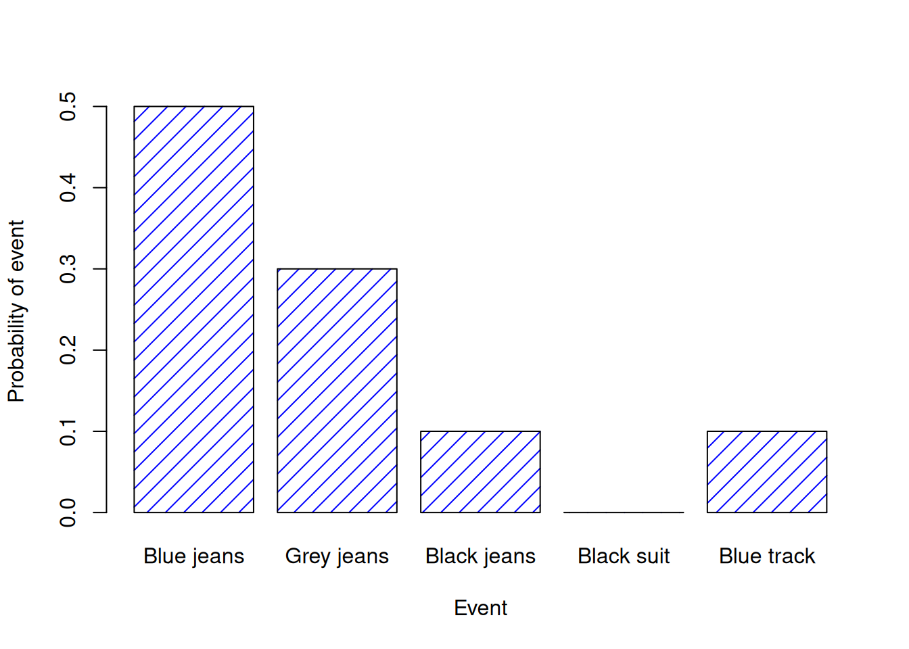
The only other thing that I need to point out is that probability theory allows you to talk about non elementary events as well as elementary ones. The easiest way to illustrate the concept is with an example. In the pants example, it’s perfectly legitimate to refer to the probability that I wear jeans. In this scenario, the “Danielle wears jeans” event is said to have happened as long as the elementary event that actually did occur is one of the appropriate ones; in this case “blue jeans”, “black jeans” or “grey jeans”. In mathematical terms, we defined the “jeans” event \(E\) to correspond to the set of elementary events \((X_1, X_2, X_3)\). If any of these elementary events occurs, then \(E\) is also said to have occurred. Having decided to write down the definition of the \(E\) this way, it’s pretty straightforward to state what the probability \(P(E)\) is: we just add everything up. In this particular case \[ P(E) = P(X_1) + P(X_2) + P(X_3) \] and, since the probabilities of blue, grey and black jeans respectively are .5, .3 and .1, the probability that I wear jeans is equal to .9.
At this point you might be thinking that this is all terribly obvious and simple and you’d be right. All we’ve really done is wrap some basic mathematics around a few common sense intuitions. However, from these simple beginnings it’s possible to construct some extremely powerful mathematical tools. I’m definitely not going to go into the details in this book, but what I will do is list – in Table 9.1 – some of the other rules that probabilities satisfy. These rules can be derived from the simple assumptions that I’ve outlined above, but since we don’t actually use these rules for anything in this book, I won’t do so here.
| English | Notation | Formula | |
|---|---|---|---|
| not \(A\) | \(P(\neg A)\) | \(=\) | \(1-P(A)\) |
| \(A\) or \(B\) | \(P(A \cup B)\) | \(=\) | \(P(A) + P(B) - P(A \cap B)\) |
| \(A\) and \(B\) | \(P(A \cap B)\) | \(=\) | \(P(A \mid B) P(B)\) |
9.4 The binomial distribution
As you might imagine, probability distributions vary enormously, and there’s an enormous range of distributions out there. However, they aren’t all equally important. In fact, the vast majority of the content in this book relies on one of five distributions: the binomial distribution, the normal distribution, the \(t\) distribution, the \(\chi^2\) (“chi-square”) distribution and the \(F\) distribution. Given this, what I’ll do over the next few sections is provide a brief introduction to all five of these, paying special attention to the binomial and the normal. I’ll start with the binomial distribution, since it’s the simplest of the five.
9.4.1 Introducing the binomial
The theory of probability originated in the attempt to describe how games of chance work, so it seems fitting that our discussion of the binomial distribution should involve a discussion of rolling dice and flipping coins. Let’s imagine a simple “experiment”: in my hot little hand I’m holding 20 identical six-sided dice. On one face of each die there’s a picture of a skull; the other five faces are all blank. If I proceed to roll all 20 dice, what’s the probability that I’ll get exactly 4 skulls? Assuming that the dice are fair, we know that the chance of any one die coming up skulls is 1 in 6; to say this another way, the skull probability for a single die is approximately \(.167\). This is enough information to answer our question, so let’s have a look at how it’s done.
As usual, we’ll want to introduce some names and some notation. We’ll let \(N\) denote the number of dice rolls in our experiment; which is often referred to as the size parameter of our binomial distribution. We’ll also use \(\theta\) to refer to the probability that a single die comes up skulls, a quantity that is usually called the success probability of the binomial.2 Finally, we’ll use \(X\) to refer to the results of our experiment, namely the number of skulls I get when I roll the dice. Since the actual value of \(X\) is due to chance, we refer to it as a random variable. In any case, now that we have all this terminology and notation, we can use it to state the problem a little more precisely. The quantity that we want to calculate is the probability that \(X = 4\) given that we know that \(\theta = .167\) and \(N=20\). The general “form” of the thing I’m interested in calculating could be written as \[ P(X \mid \theta, N) \] and we’re interested in the special case where \(X=4\), \(\theta = .167\) and \(N=20\). There’s only one more piece of notation I want to refer to before moving on to discuss the solution to the problem. If I want to say that \(X\) is generated randomly from a binomial distribution with parameters \(\theta\) and \(N\), the notation I would use is as follows: \[ X \sim \text{Binomial}(\theta, N) \]
2 Note that the term “success” is pretty arbitrary, and doesn’t actually imply that the outcome is something to be desired. If \(\theta\) referred to the probability that any one passenger gets injured in a bus crash, I’d still call it the success probability, but that doesn’t mean I want people to get hurt in bus crashes!
Yeah, yeah. I know what you’re thinking: notation, notation, notation. Really, who cares? Very few readers of this book are here for the notation, so I should probably move on and talk about how to use the binomial distribution. I’ve included the formula for the binomial distribution in Table 9.3, since some readers may want to play with it themselves, but since most people probably don’t care that much and because we don’t need the formula in this book, I won’t talk about it in any detail. Instead, I just want to show you what the binomial distribution looks like. To that end, Figure 9.3 plots the binomial probabilities for all possible values of \(X\) for our dice rolling experiment, from \(X=0\) (no skulls) all the way up to \(X=20\) (all skulls). Note that this is basically a bar chart, and is no different to the “pants probability” plot I drew in Figure 9.2. On the horizontal axis we have all the possible events, and on the vertical axis we can read off the probability of each of those events. So, the probability of rolling 4 skulls out of 20 times is about 0.20 (the actual answer is 0.2022036, as we’ll see in a moment). In other words, you’d expect that to happen about 20% of the times you repeated this experiment.
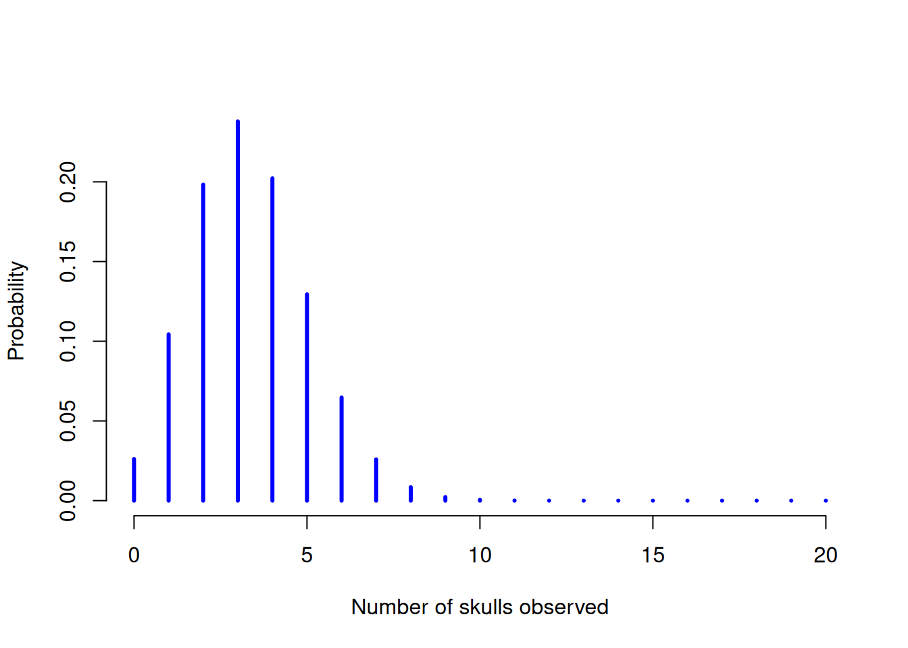
9.4.2 Working with the binomial distribution in R
Although some people find it handy to know the formulas in Table 9.3, most people just want to know how to use the distributions without worrying too much about the maths. To that end, R has a function called dbinom() that calculates binomial probabilities for us. The main arguments to the function are
x. This is a number, or vector of numbers, specifying the outcomes whose probability you’re trying to calculate.size. This is a number telling R the size of the experiment.prob. This is the success probability for any one trial in the experiment.
So, in order to calculate the probability of getting x = 4 skulls, from an experiment of size = 20 trials, in which the probability of getting a skull on any one trial is prob = 1/6 … well, the command I would use is simply this:
dbinom(x = 4, size = 20, prob = 1 / 6)[1] 0.2022036To give you a feel for how the binomial distribution changes when we alter the values of \(\theta\) and \(N\), let’s suppose that instead of rolling dice, I’m actually flipping coins. This time around, my experiment involves flipping a fair coin repeatedly, and the outcome that I’m interested in is the number of heads that I observe. In this scenario, the success probability is now \(\theta = 1/2\). Suppose I were to flip the coin \(N=20\) times. In this example, I’ve changed the success probability, but kept the size of the experiment the same. What does this do to our binomial distribution? Well, as Figure 9.4 (a) shows, the main effect of this is to shift the whole distribution, as you’d expect. Okay, what if we flipped a coin \(N=100\) times? Well, in that case, we get Figure 9.4 (b). The distribution stays roughly in the middle, but there’s a bit more variability in the possible outcomes.
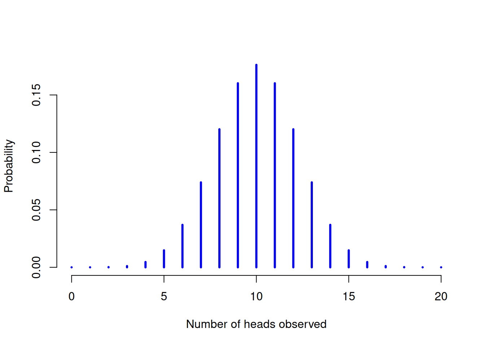
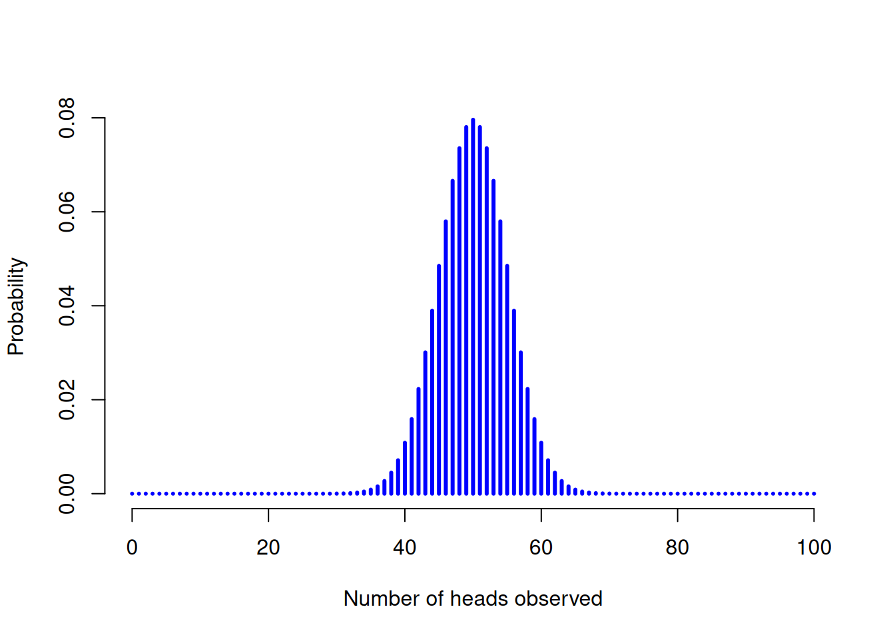
At this point, I should probably explain the name of the dbinom() function. Obviously, the “binom” part comes from the fact that we’re working with the binomial distribution, but the “d” prefix is probably a bit of a mystery. In this section I’ll give a partial explanation: specifically, I’ll explain why there is a prefix. As for why it’s a “d” specifically, you’ll have to wait until the next section. What’s going on here is that R actually provides four functions in relation to the binomial distribution. These four functions are dbinom(), pbinom(), rbinom() and qbinom(), and each one calculates a different quantity of interest. Not only that, R does the same thing for every probability distribution that it implements. No matter what distribution you’re talking about, there’s a d function, a p function, a q function and a r function. This is illustrated in Table 9.2, using the binomial distribution and the normal distribution as examples.
| what it does | prefix | normal distribution | binomial distribution |
|---|---|---|---|
| probability (density) of | d |
dnorm() |
dbinom() |
| cumulative probability of | p |
pnorm() |
pbinom() |
| generate random number from | r |
rnorm() |
rbinom() |
| quantile of | q |
qnorm() |
qbinom() |
Let’s have a look at what all four functions do. Firstly, all four versions of the function require you to specify the size and prob arguments: no matter what you’re trying to get R to calculate, it needs to know what the parameters are. However, they differ in terms of what the other argument is, and what the output is. So let’s look at them one at a time.
- The
dform we’ve already seen: you specify a particular outcomex, and the output is the probability of obtaining exactly that outcome. (the “d” is short for density, but ignore that for now). - The
pform calculates the cumulative probability. You specify a particular quantileq, and it tells you the probability of obtaining an outcome smaller than or equal toq. - The
qform calculates the quantiles of the distribution. You specify a probability valuep, and gives you the corresponding percentile. That is, the value of the variable for which there’s a probabilitypof obtaining an outcome lower than that value. - The
rform is a random number generator: specifically, it generatesnrandom outcomes from the distribution.
This is a little abstract, so let’s look at some concrete examples. Again, we’ve already covered dbinom() so let’s focus on the other three versions. We’ll start with pbinom(), and we’ll go back to the skull-dice example. Again, I’m rolling 20 dice, and each die has a 1 in 6 chance of coming up skulls. Suppose, however, that I want to know the probability of rolling 4 or fewer skulls. If I wanted to, I could use the dbinom() function to calculate the exact probability of rolling 0 skulls, 1 skull, 2 skulls, 3 skulls and 4 skulls and then add these up, but there’s a faster way. Instead, I can calculate this using the pbinom() function. Here’s the command:
pbinom(q = 4, size = 20, prob = 1 / 6)[1] 0.7687492In other words, there is a 76.9% chance that I will roll 4 or fewer skulls. Or, to put it another way, R is telling us that a value of 4 is actually the 76.9th percentile of this binomial distribution.
Next, let’s consider the qbinom() function. Let’s say I want to calculate the 75th percentile of the binomial distribution. If we’re sticking with our skulls example, I would use the following command to do this:
qbinom(p = 0.75, size = 20, prob = 1 / 6)[1] 4Hm. There’s something odd going on here. Let’s think this through. What the qbinom() function appears to be telling us is that the 75th percentile of the binomial distribution is 4, even though we saw from the pbinom() function that 4 is actually the 76.9th percentile. And it’s definitely the pbinom() function that is correct. I promise. The weirdness here comes from the fact that our binomial distribution doesn’t really have a 75th percentile. Not really. Why not? Well, there’s a 56.7% chance of rolling 3 or fewer skulls (you can type pbinom(3, 20, 1/6) to confirm this if you want), and a 76.9% chance of rolling 4 or fewer skulls. So there’s a sense in which the 75th percentile should lie “in between” 3 and 4 skulls. But that makes no sense at all! You can’t roll 20 dice and get 3.9 of them come up skulls. This issue can be handled in different ways: you could report an in between value (or interpolated value, to use the technical name) like 3.9, you could round down (to 3) or you could round up (to 4). The qbinom() function rounds upwards: if you ask for a percentile that doesn’t actually exist (like the 75th in this example), R finds the smallest value for which the percentile rank is at least what you asked for. In this case, since the “true” 75th percentile (whatever that would mean) lies somewhere between 3 and 4 skulls, R rounds up and gives you an answer of 4. This subtlety is tedious, I admit, but thankfully it’s only an issue for discrete distributions like the binomial (see Section 2.2.5 for a discussion of continuous versus discrete). The other distributions that I’ll talk about (normal, \(t\), \(\chi^2\) and \(F\)) are all continuous, and so R can always return an exact quantile whenever you ask for it.
Finally, we have the random number generator. To use the rbinom() function, you specify how many times R should “simulate” the experiment using the n argument, and it will generate random outcomes from the binomial distribution. So, for instance, suppose I were to repeat my die rolling experiment 100 times. I could get R to simulate the results of these experiments by using the following command:
rbinom(n = 100, size = 20, prob = 1 / 6) [1] 3 4 5 4 1 1 3 3 1 2 1 2 3 5 3 4 1 2 4 3 6 3 3 2 4 4 2 5 3 3 2 3 4 5 2 4 3
[38] 5 2 5 3 4 4 5 3 2 5 2 2 3 3 3 3 3 3 2 5 5 3 2 2 3 5 3 5 1 1 3 5 2 3 3 0 3
[75] 6 3 3 4 3 4 6 3 3 4 2 2 3 5 3 2 4 4 6 4 2 2 2 5 1 3As you can see, these numbers are pretty much what you’d expect given the distribution shown in Figure 9.3. Most of the time I roll somewhere between 1 to 5 skulls. There are a lot of subtleties associated with random number generation using a computer,3 but for the purposes of this book we don’t need to worry too much about them.
3 Since computers are deterministic machines, they can’t actually produce truly random behaviour. Instead, what they do is take advantage of various mathematical functions that share a lot of similarities with true randomness. What this means is that any random numbers generated on a computer are pseudorandom, and the quality of those numbers depends on the specific method used. By default R uses the “Mersenne twister” method. In any case, you can find out more by typing ?Random, but as usual the R help files are fairly dense.
9.5 The normal distribution
While the binomial distribution is conceptually the simplest distribution to understand, it’s not the most important one. That particular honour goes to the normal distribution, which is also referred to as “the bell curve” or a “Gaussian distribution”. A normal distribution is described using two parameters, the mean of the distribution \(\mu\) and the standard deviation of the distribution \(\sigma\). The notation that we sometimes use to say that a variable \(X\) is normally distributed is as follows: \[
X \sim \text{Normal}(\mu,\sigma)
\] Of course, that’s just notation. It doesn’t tell us anything interesting about the normal distribution itself. As was the case with the binomial distribution, I have included the formula for the normal distribution in this book, because I think it’s important enough that everyone who learns statistics should at least look at it, but since this is an introductory text I don’t want to focus on it, so I’ve tucked it away in Table 9.3. Similarly, the R functions for the normal distribution are dnorm(), pnorm(), qnorm() and rnorm(). However, they behave in pretty much exactly the same way as the corresponding functions for the binomial distribution, so there’s not a lot that you need to know. The only thing that I should point out is that the argument names for the parameters are mean and sd. In pretty much every other respect, there’s nothing else to add.
| Binomial | Normal |
|---|---|
| \(P(X \mid \theta, N) = \dfrac{N!}{X! (N-X)!} \theta^X (1-\theta)^{N-X}\) | \(p(X \mid \mu, \sigma) = \dfrac{1}{\sqrt{2\pi}\sigma} \exp \left( -\dfrac{(X - \mu)^2}{2\sigma^2} \right)\) |
Instead of focusing on the maths, let’s try to get a sense for what it means for a variable to be normally distributed. To that end, have a look at Figure 9.5, which plots a normal distribution with mean \(\mu = 0\) and standard deviation \(\sigma = 1\). You can see where the name “bell curve” comes from: it looks a bit like a bell. Notice that, unlike the plots that I drew to illustrate the binomial distribution, the picture of the normal distribution in Figure 9.5 shows a smooth curve instead of “histogram-like” bars. This isn’t an arbitrary choice: the normal distribution is continuous, whereas the binomial is discrete. For instance, in the die rolling example from the last section, it was possible to get 3 skulls or 4 skulls, but impossible to get 3.9 skulls. The figures that I drew in the previous section reflected this fact: in Figure 9.3, for instance, there’s a bar located at \(X=3\) and another one at \(X=4\), but there’s nothing in between. Continuous quantities don’t have this constraint. For instance, suppose we’re talking about the weather. The temperature on a pleasant Spring day could be 23 degrees, 24 degrees, 23.9 degrees, or anything in between since temperature is a continuous variable, and so a normal distribution might be quite appropriate for describing Spring temperatures.4
4 In practice, the normal distribution is so handy that people tend to use it even when the variable isn’t actually continuous. As long as there are enough categories (e.g., Likert scale responses to a questionnaire), it’s pretty standard practice to use the normal distribution as an approximation. This works out much better in practice than you’d think.
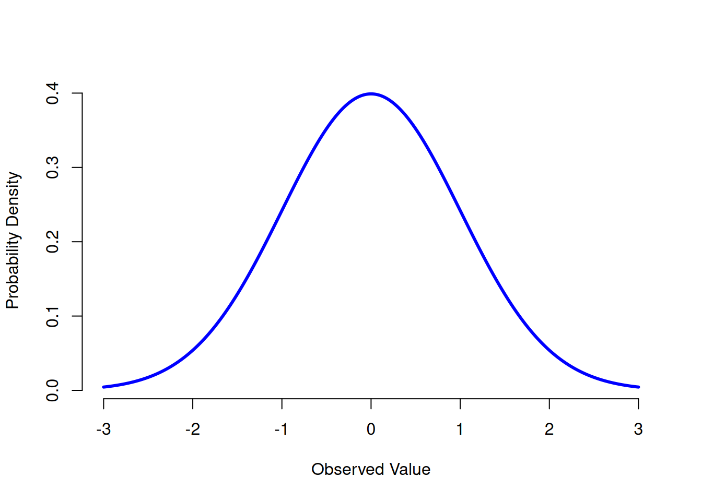
With this in mind, let’s see if we can’t get an intuition for how the normal distribution works. Firstly, let’s have a look at what happens when we play around with the parameters of the distribution. To that end, Figure 9.6 plots normal distributions that have different means, but have the same standard deviation. As you might expect, all of these distributions have the same “width”. The only difference between them is that they’ve been shifted to the left or to the right. In every other respect they’re identical. In contrast, if we increase the standard deviation while keeping the mean constant, the peak of the distribution stays in the same place, but the distribution gets wider, as you can see in Figure 9.7. Notice, though, that when we widen the distribution, the height of the peak shrinks. This has to happen: in the same way that the heights of the bars that we used to draw a discrete binomial distribution have to sum to 1, the total area under the curve for the normal distribution must equal 1. Before moving on, I want to point out one important characteristic of the normal distribution. Irrespective of what the actual mean and standard deviation are, 68.3% of the area falls within 1 standard deviation of the mean. Similarly, 95.4% of the distribution falls within 2 standard deviations of the mean, and 99.7% of the distribution is within 3 standard deviations. This idea is illustrated in Figure 9.8 and Figure 9.9.
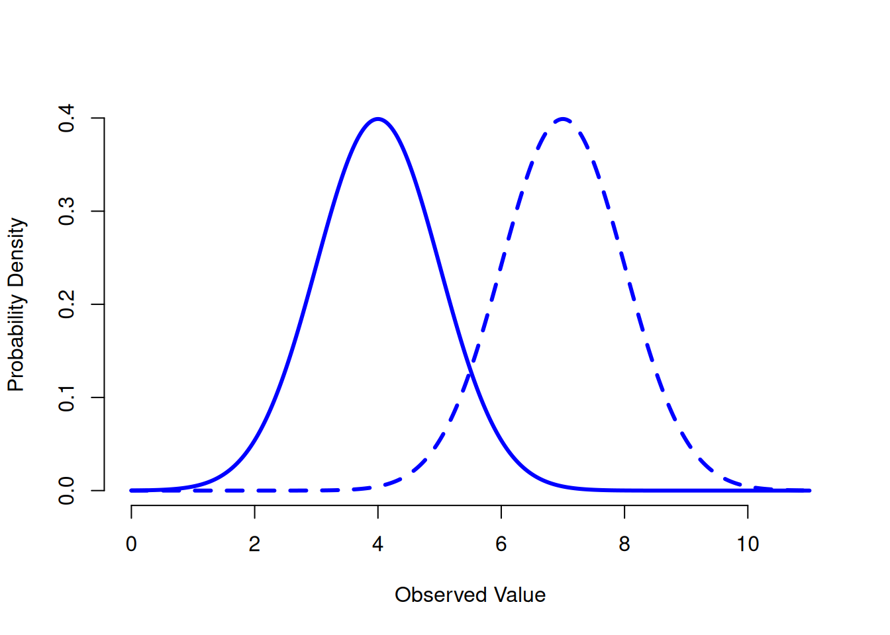
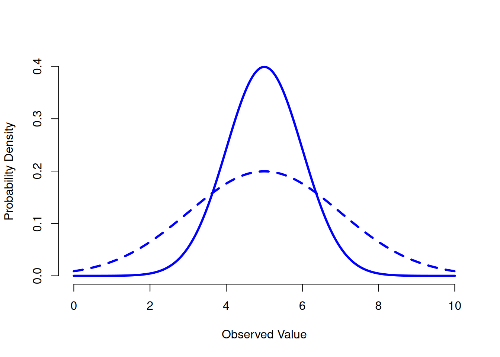
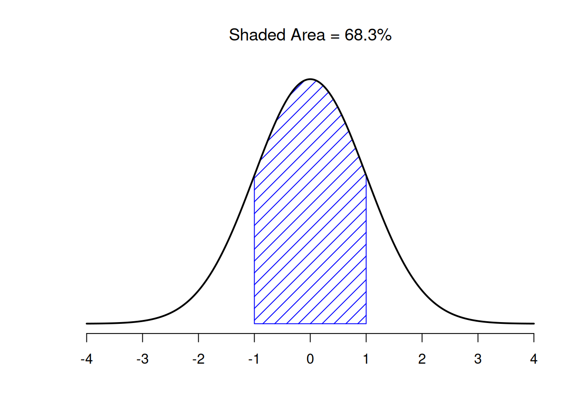
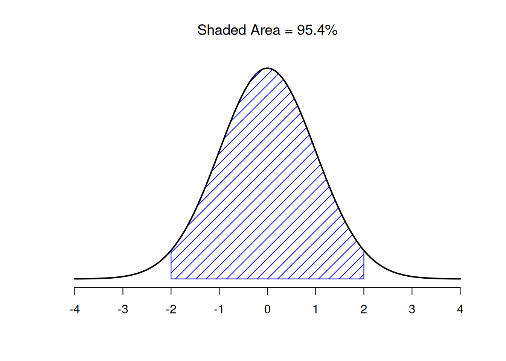
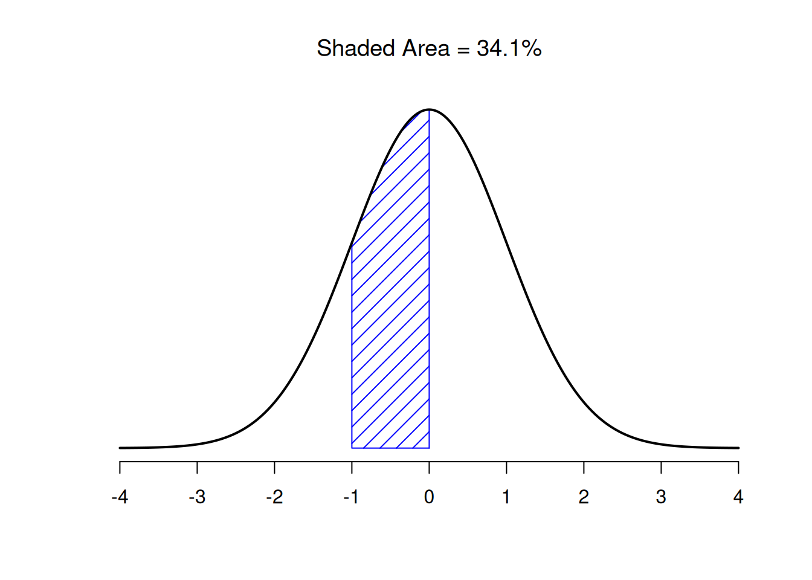
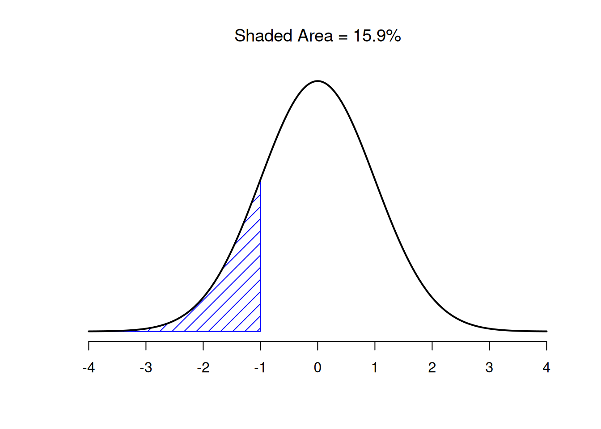
9.5.1 Probability density (advanced)
There’s something I’ve been trying to hide throughout my discussion of the normal distribution, something that some introductory textbooks omit completely. They might be right to do so: this “thing” that I’m hiding is weird and counterintuitive even by the admittedly distorted standards that apply in statistics. Fortunately, it’s not something that you need to understand at a deep level in order to do basic statistics: rather, it’s something that starts to become important later on when you move beyond the basics. So, if it doesn’t make complete sense, don’t worry: try to make sure that you follow the gist of it.
Throughout my discussion of the normal distribution, there’s been one or two things that don’t quite make sense. Perhaps you noticed that the \(y\)-axis in these figures is labelled “Probability Density” rather than density. Maybe you noticed that I used \(p(X)\) instead of \(P(X)\) when giving the formula for the normal distribution. Maybe you’re wondering why R uses the “d” prefix for functions like dnorm(). And maybe, just maybe, you’ve been playing around with the dnorm() function, and you accidentally typed in a command like this:
dnorm(x = 1, mean = 1, sd = 0.1)[1] 3.989423And if you’ve done the last part, you’re probably very confused. I’ve asked R to calculate the probability that x = 1, for a normally distributed variable with mean = 1 and standard deviation sd = 0.1; and it tells me that the probability is 3.99. But, as we discussed earlier, probabilities can’t be larger than 1. So either I’ve made a mistake, or that’s not a probability.
As it turns out, the second answer is correct. What we’ve calculated here isn’t actually a probability: it’s something else. To understand what that something is, you have to spend a little time thinking about what it really means to say that \(X\) is a continuous variable. Let’s say we’re talking about the temperature outside. The thermometer tells me it’s 23 degrees, but I know that’s not really true. It’s not exactly 23 degrees. Maybe it’s 23.1 degrees, I think to myself. But I know that that’s not really true either, because it might actually be 23.09 degrees. But, I know that… well, you get the idea. The tricky thing with genuinely continuous quantities is that you never really know exactly what they are.
Now think about what this implies when we talk about probabilities. Suppose that tomorrow’s maximum temperature is sampled from a normal distribution with mean 23 and standard deviation 1. What’s the probability that the temperature will be exactly 23 degrees? The answer is “zero”, or possibly, “a number so close to zero that it might as well be zero”. Why is this? It’s like trying to throw a dart at an infinitely small dart board: no matter how good your aim, you’ll never hit it. In real life you’ll never get a value of exactly 23. It’ll always be something like 23.1 or 22.99998 or something. In other words, it’s completely meaningless to talk about the probability that the temperature is exactly 23 degrees. However, in everyday language, if I told you that it was 23 degrees outside and it turned out to be 22.9998 degrees, you probably wouldn’t call me a liar. Because in everyday language, “23 degrees” usually means something like “somewhere between 22.5 and 23.5 degrees”. And while it doesn’t feel very meaningful to ask about the probability that the temperature is exactly 23 degrees, it does seem sensible to ask about the probability that the temperature lies between 22.5 and 23.5, or between 20 and 30, or any other range of temperatures.
The point of this discussion is to make clear that, when we’re talking about continuous distributions, it’s not meaningful to talk about the probability of a specific value. However, what we can talk about is the probability that the value lies within a particular range of values. To find out the probability associated with a particular range, what you need to do is calculate the “area under the curve”. We’ve seen this concept already: in Figure 9.8, the shaded areas shown depict genuine probabilities (e.g., in panel (a) it shows the probability of observing a value that falls within 1 standard deviation of the mean).
Okay, so that explains part of the story. I’ve explained a little bit about how continuous probability distributions should be interpreted (i.e., area under the curve is the key thing), but I haven’t actually explained what the dnorm() function actually calculates. Equivalently, what does the formula for \(p(x)\) that I described earlier actually mean? Obviously, \(p(x)\) doesn’t describe a probability, but what is it? The name for this quantity \(p(x)\) is a probability density, and in terms of the plots we’ve been drawing, it corresponds to the height of the curve. The densities themselves aren’t meaningful in and of themselves: but they’re “rigged” to ensure that the area under the curve is always interpretable as genuine probabilities. To be honest, that’s about as much as you really need to know for now.5
5 For those readers who know a little calculus, I’ll give a slightly more precise explanation. In the same way that probabilities are non-negative numbers that must sum to 1, probability densities are non-negative numbers that must integrate to 1 (where the integral is taken across all possible values of \(X\)). To calculate the probability that \(X\) falls between \(a\) and \(b\) we calculate the definite integral of the density function over the corresponding range, \(\int_a^b p(x) \ dx\). If you don’t remember or never learned calculus, don’t worry about this. It’s not needed for this book.
9.6 Other useful distributions
The normal distribution is the distribution that statistics makes most use of (for reasons to be discussed shortly), and the binomial distribution is a very useful one for lots of purposes. But the world of statistics is filled with probability distributions, some of which we’ll run into in passing. In particular, the three that will appear in this book are the \(t\) distribution, the \(\chi^2\) distribution and the \(F\) distribution. I won’t give formulas for any of these, or talk about them in too much detail, but I will show you some pictures.
The \(t\) distribution is a continuous distribution that looks very similar to a normal distribution, but has heavier tails: see Figure 9.10. This distribution tends to arise in situations where you think that the data actually follow a normal distribution, but you don’t know the mean or standard deviation. As you might expect, the relevant R functions are dt(), pt(), qt() and rt(), and we’ll run into this distribution again in The \(t\)-test.
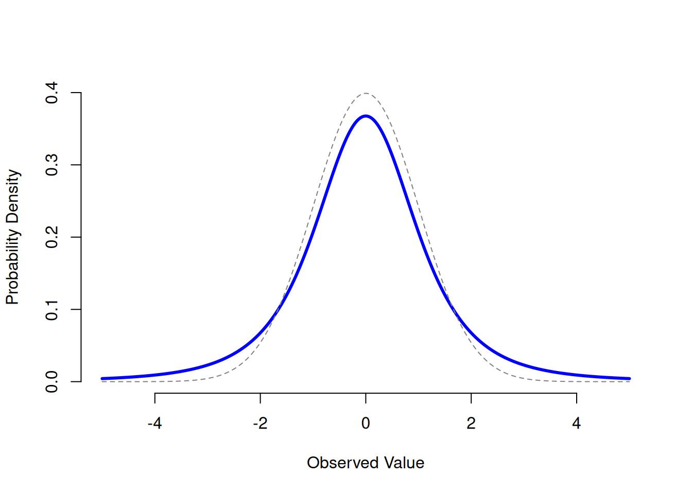
The \(\chi^2\) distribution is another distribution that turns up in lots of different places. The situation in which we’ll see it is when doing categorical data analysis (Categorical data analysis), but it’s one of those things that actually pops up all over the place. When you dig into the maths (and who doesn’t love doing that?), it turns out that the main reason why the \(\chi^2\) distribution turns up all over the place is that, if you have a bunch of variables that are normally distributed, square their values and then add them up (a procedure referred to as taking a “sum of squares”), this sum has a \(\chi^2\) distribution. You’d be amazed how often this fact turns out to be useful. Anyway, here’s what a \(\chi^2\) distribution looks like: Figure 9.11. Once again, the R commands for this one are pretty predictable: dchisq(), pchisq(), qchisq(), rchisq().
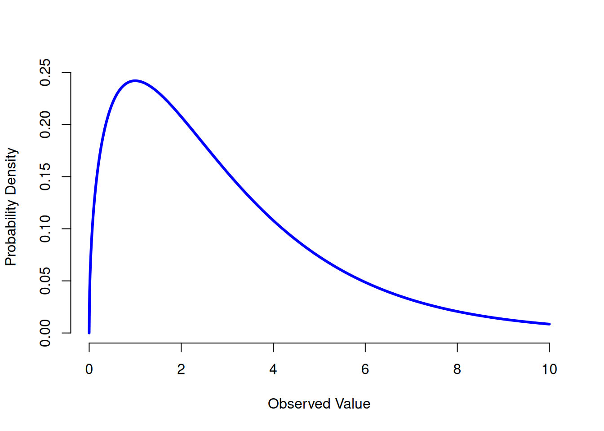
The \(F\) distribution looks a bit like a \(\chi^2\) distribution, and it arises whenever you need to compare two \(\chi^2\) distributions to one another. Admittedly, this doesn’t exactly sound like something that any sane person would want to do, but it turns out to be very important in real world data analysis. Remember when I said that \(\chi^2\) turns out to be the key distribution when we’re taking a “sum of squares”? Well, what that means is if you want to compare two different “sums of squares”, you’re probably talking about something that has an \(F\) distribution. Of course, as yet I still haven’t given you an example of anything that involves a sum of squares, but I will… in Section 14.2. And that’s where we’ll run into the \(F\) distribution. Oh, and here’s a picture: Figure 9.12. And of course we can get R to do things with \(F\) distributions just by using the commands df(), pf(), qf() and rf().
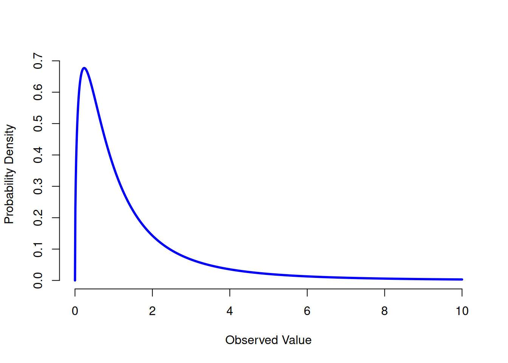
Because these distributions are all tightly related to the normal distribution and to each other, and because they will turn out to be the important distributions when doing inferential statistics later in this book, I think it’s useful to do a little demonstration using R, just to “convince ourselves” that these distributions really are related to each other in the way that they’re supposed to be. First, we’ll use the rnorm() function to generate 1000 normally-distributed observations:
normal_a <- rnorm(n = 1000, mean = 0, sd = 1)
print(normal_a) [1] 0.100869244 2.363144163 0.593078896 -0.093278718 -0.144428097
[6] -0.087911488 -1.864084642 0.413033327 -0.417353917 0.025875243
[11] -1.317115990 -0.290188438 -0.419154029 1.583886845 0.397013518
BLAH BLAH BLAHSo the normal_a variable contains 1000 numbers that are normally distributed, and have mean 0 and standard deviation 1, and the actual print out of these numbers goes on for rather a long time. Note that, because the default parameters of the rnorm() function are mean=0 and sd=1, I could have shortened the command to rnorm( n=1000 ). In any case, what we can do is use the hist() function to draw a histogram of the data, like so:
hist(normal_a)If you do this, you should see something similar to Figure 9.13 (a). Your plot won’t look quite as pretty as the one in the figure, of course, because I’ve played around with all the formatting (see Chapter 6), and I’ve also plotted the true distribution of the data as a solid black line (i.e., a normal distribution with mean 0 and standard deviation 1) so that you can compare the data that we just generated to the true distribution.
In the previous example all I did was generate lots of normally distributed observations using rnorm() and then compared those to the true probability distribution in the figure (using dnorm() to generate the black line in the figure, but I didn’t show the commands for that). Now let’s try something trickier. We’ll try to generate some observations that follow a chi-square distribution with 3 degrees of freedom, but instead of using rchisq(), we’ll start with variables that are normally distributed, and see if we can exploit the known relationships between normal and chi-square distributions to do the work. As I mentioned earlier, a chi-square distribution with \(k\) degrees of freedom is what you get when you take \(k\) normally-distributed variables (with mean 0 and standard deviation 1), square them, and add them up. Since we want a chi-square distribution with 3 degrees of freedom, we’ll need to supplement our normal_a data with two more sets of normally-distributed observations, imaginatively named normal_b and normal_c:
normal_b <- rnorm(n = 1000) # another set of normally distributed data
normal_c <- rnorm(n = 1000) # and another!Now that we’ve done that, the theory says we should square these and add them together, like this
chi_sq_3 <- (normal_a)^2 + (normal_b)^2 + (normal_c)^2and the resulting chi_sq_3 variable should contain 1000 observations that follow a chi-square distribution with 3 degrees of freedom. You can use the hist() function to have a look at these observations yourself, using a command like this,
hist(chi_sq_3)and you should obtain a result that looks pretty similar to the plot in Figure 9.13 (b). Once again, the plot that I’ve drawn is a little fancier: in addition to the histogram of chi_sq_3, I’ve also plotted a chi-square distribution with 3 degrees of freedom. It’s pretty clear that – even though I used rnorm() to do all the work rather than rchisq() – the observations stored in the chi_sq_3 variable really do follow a chi-square distribution. Admittedly, this probably doesn’t seem all that interesting right now, but later on when we start encountering the chi-square distribution in Categorical data analysis, it will be useful to understand the fact that these distributions are related to one another.
We can extend this demonstration to the \(t\) distribution and the \(F\) distribution. Earlier, I implied that the \(t\) distribution is related to the normal distribution when the standard deviation is unknown. That’s certainly true, and that’s what we’ll see later on in The \(t\)-test, but there’s a somewhat more precise relationship between the normal, chi-square and \(t\) distributions. Suppose we “scale” our chi-square data by dividing it by the degrees of freedom, like so
scaled_chi_sq_3 <- chi_sq_3 / 3We then take a set of normally distributed variables and divide them by (the square root of) our scaled chi-square variable which had \(df=3\), and the result is a \(t\) distribution with 3 degrees of freedom:
normal_d <- rnorm(n = 1000) # yet another set of normally distributed data
t_3 <- normal_d / sqrt(scaled_chi_sq_3) # divide by square root of scaled chi-square to get tIf we plot the histogram of t_3, we end up with something that looks very similar to Figure 9.13 (c). Similarly, we can obtain an \(F\) distribution by taking the ratio between two scaled chi-square distributions. Suppose, for instance, we wanted to generate data from an \(F\) distribution with 3 and 20 degrees of freedom. We could do this using df(), but we could also do the same thing by generating two chi-square variables, one with 3 degrees of freedom, and the other with 20 degrees of freedom. As the example with chi_sq_3 illustrates, we can actually do this using rnorm() if we really want to, but this time I’ll take a short cut:
chi_sq_20 <- rchisq(1000, 20) # generate chi square data with df = 20...
scaled_chi_sq_20 <- chi_sq_20 / 20 # scale the chi square variable...
f_3_20 <- scaled_chi_sq_3 / scaled_chi_sq_20 # take the ratio of the two chi squares...
hist(f_3_20) # ... and draw a picture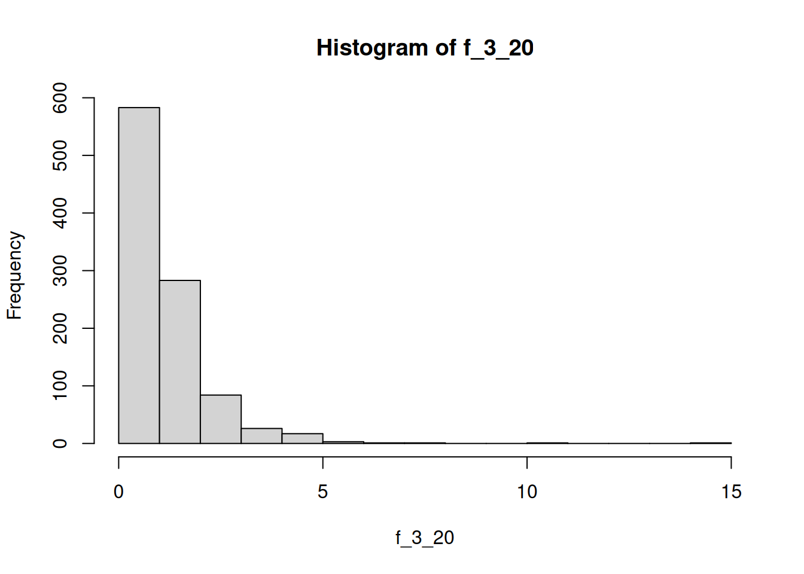
The resulting f_3_20 variable does in fact store variables that follow an \(F\) distribution with 3 and 20 degrees of freedom. This is illustrated in Figure 9.13 (d), which plots the histogram of the observations stored in f_3_20 against the true \(F\) distribution with \(df_1 = 3\) and \(df_2 = 20\). Again, they match.
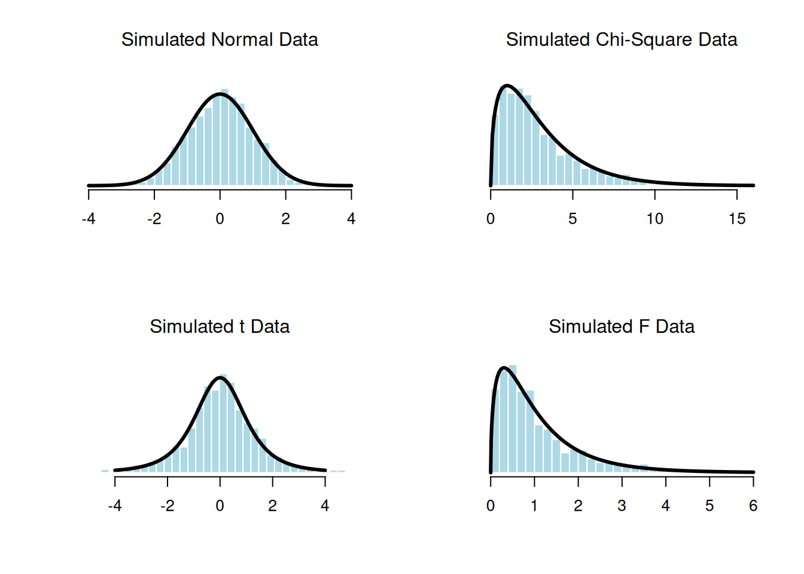
normal_a, against a normal distribution; (b) chi_sq_3, against a \(\chi^2\) distribution with 3 degrees of freedom; (c) t_3, against a \(t\) distribution with 3 degrees of freedom; (d) f_3_20, against an \(F\) distribution with 3 and 20 degrees of freedom.
Okay, time to wrap this section up. We’ve seen three new distributions: \(\chi^2\), \(t\) and \(F\). They’re all continuous distributions, and they’re all closely related to the normal distribution. I’ve talked a little bit about the precise nature of this relationship, and shown you some R commands that illustrate this relationship. The key thing for our purposes, however, is not that you have a deep understanding of all these different distributions, nor that you remember the precise relationships between them. The main thing is that you grasp the basic idea that these distributions are all deeply related to one another, and to the normal distribution. Later on in this book, we’re going to run into data that are normally distributed, or at least assumed to be normally distributed. What I want you to understand right now is that, if you make the assumption that your data are normally distributed, you shouldn’t be surprised to see \(\chi^2\), \(t\) and \(F\) distributions popping up all over the place when you start trying to do your data analysis.
9.7 Summary
In this chapter we’ve talked about probability. We’ve talked about what probability means, and why statisticians can’t agree on what it means. We talked about the rules that probabilities have to obey. And we introduced the idea of a probability distribution, and spent a good chunk of the chapter talking about some of the more important probability distributions that statisticians work with. The section by section breakdown looks like this:
- Probability theory versus statistics (Section 9.1)
- Frequentist versus Bayesian views of probability (Section 9.2)
- Basics of probability theory (Section 9.3)
- Binomial distribution (Section 9.4), normal distribution (Section 9.5), and others (Section 9.6)
As you’d expect, my coverage is by no means exhaustive. Probability theory is a large branch of mathematics in its own right, entirely separate from its application to statistics and data analysis. As such, there are thousands of books written on the subject and universities generally offer multiple classes devoted entirely to probability theory. Even the “simpler” task of documenting standard probability distributions is a big topic. I’ve described five standard probability distributions in this chapter, but sitting on my bookshelf I have a 45-chapter book called “Statistical Distributions” (Evans et al., 2011) that lists a lot more than that. Fortunately for you, very little of this is necessary. You’re unlikely to need to know dozens of statistical distributions when you go out and do real world data analysis, and you definitely won’t need them for this book, but it never hurts to know that there’s other possibilities out there.
Picking up on that last point, there’s a sense in which this whole chapter is something of a digression. Many undergraduate psychology classes on statistics skim over this content very quickly (I know mine did), and even the more advanced classes will often “forget” to revisit the basic foundations of the field. Most academic psychologists would not know the difference between probability and density, and until recently very few would have been aware of the difference between Bayesian and frequentist probability. However, I think it’s important to understand these things before moving onto the applications. For example, there are a lot of rules about what you’re “allowed” to say when doing statistical inference, and many of these can seem arbitrary and weird. However, they start to make sense if you understand that there is this Bayesian/frequentist distinction. Similarly, in The \(t\)-test we’re going to talk about something called the \(t\)-test, and if you really want to have a grasp of the mechanics of the \(t\)-test it really helps to have a sense of what a \(t\)-distribution actually looks like. You get the idea, I hope.